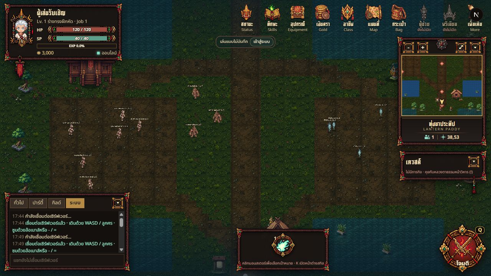
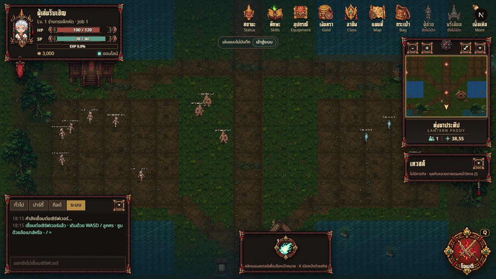

ภาพเกมออนไลน์1280×720 · กล้อง overview/สเกลเดียวกัน · เวลาและตัวละครในแต่ละภาพต่างกัน


พอร์ทัลใหม่: ชายป่าขอบตะวันออก(79,34) → ทุ่งนาขอบตะวันตก · ทุ่งนาขอบตะวันออก(75,19) → ชายเลน · ชายเลนขอบตะวันออก(79,51) → บึง · กลับผ่านขอบตะวันตก
มอนสเตอร์ชนิดเดิมยังทำหน้าที่ชั่วคราวในสามแมพใหม่ · World map30จุดมี5แมพเล่นได้25แมพในแผน ชื่อใหม่/ภูมิศาสตร์/เลเวลยังเป็นข้อเสนอ